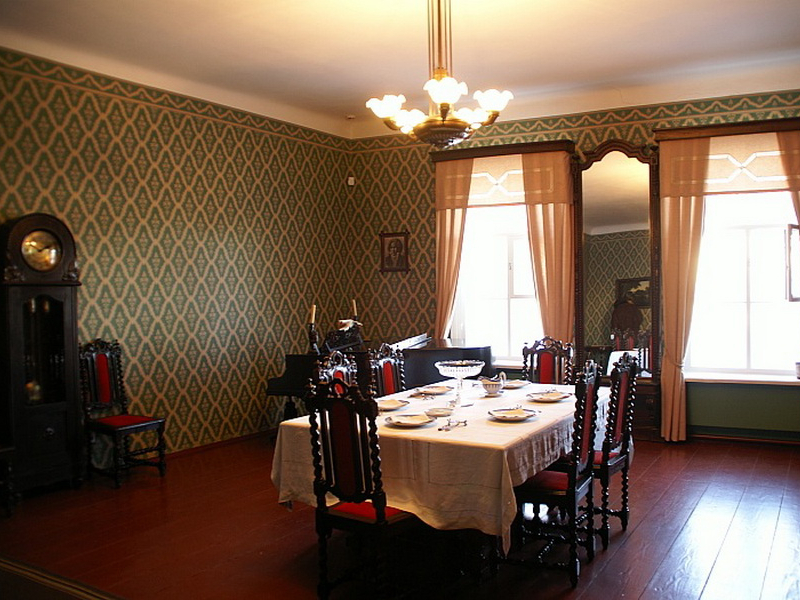

"Дневник писателя" 1880 года – это пятая часть цикла философско-публицистических размышлений Фёдора Михайловича Достоевского, написанных в форме дневниковых записей. Он является продолжением "Дневника писателя" 1873, 1876 и 1877 годов, и в нем Достоевский продолжает развивать свои мысли о социальной справедливости, о религии и о смысле жизни.
В своих записях Достоевский глубоко заботится о судьбе простого народа, о бедных и обиженных. Он пишет о нищете, бездомности, несправедливости, которая царит в обществе. Он также рассуждает о роли образования и воспитания в решении социальных проблем, видя в них ключ к изменению общества и повышению нравственности людей. Достоевский призывает к состраданию, к помощи нуждающимся, осуждая безразличие и жестокость. Он глубоко убежден в том, что человек способен к духовному преображению и к созданию более справедливого мира. Достоевский не отказывается от своих философских и религиозных размышлений. Он продолжает глубоко размышлять о религиозных вопросах, о смысле жизни, о духовном преображении человека. Он часто обращается к образу Христа как символу любви и сострадания, видя в нем образец моральной и духовной идеальности. Он ищет ответы на вечные вопросы о цели существования, о том, что делает жизнь значимой и смысленной.
Жертва несправедливости и бедности: "Народ" в "Дневнике писателя" - это обобщенный образ бедняков, крестьян, работяг, которые страдают от нищеты, голода, несправедливой системы. Достоевский с сочувствием и болью рисует их жизнь, полную тяжелого труда, без надежды на лучшее.
Невинный и страдающий: "Народ" - это жертва бесчеловечной системы и жестокости богатых. Он показывает их беззащитность перед властью, не имея никаких возможностей отстоять свои права.
Ищущий справедливости: Достоевский описывает "народ" не только как жертву, но и как человека, стремящегося к справедливости и лучшей жизни. Он рисует их мечты о счастье, о том, чтобы жить достойно.
Внутренний мир и духовность: "Народ" в "Дневнике писателя" - это не просто масса, а сбор индивидуальностей, у каждого из которых есть свой внутренний мир, свои мечты, свои духовные ценности.
Бюрократ и формалист: Чиновник в "Дневнике писателя" - это типичный представитель бюрократической системы, зацикленный на формальностях и правилах. Он бездушен, равнодушен к человеческим бедам и беспокоится только о собственной карьере и статусе.
Безжалостный к народу: Чиновник не видит в "народе" людей, он воспринимает их как массу, которую нужно контролировать и управлять. Он жесток и несправедлив, используя свою власть для собственных целей.
Жертва собственной системы: Чиновник - это также жертва системы, в которой он живет. Он заложник своей карьеры, своих амбиций, своей глупости.
Жертва своих идей: "Чин" выполняет свою работу бездушно, не задумываясь о моральных и этических аспектах.
Отсутствие совести: Чиновник в "Дневнике писателя" - это человек без совести, который не может понять и увидеть страдания других людей. Он живет в своем мирке иллюзий, не замечая реальной жизни вокруг себя..
